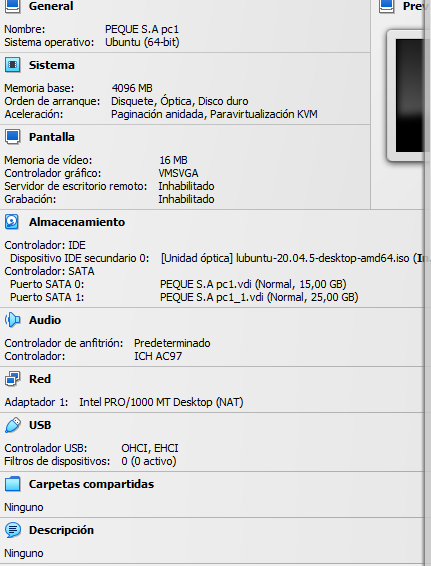
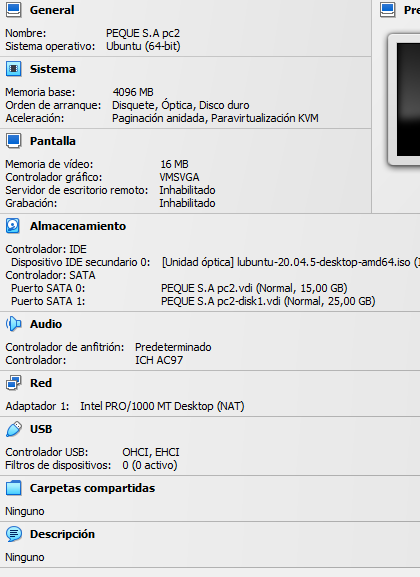
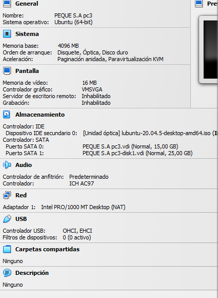
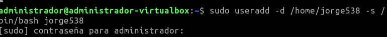
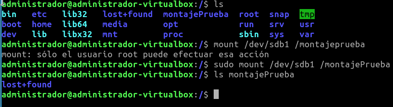
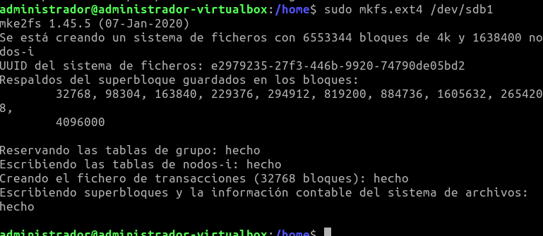
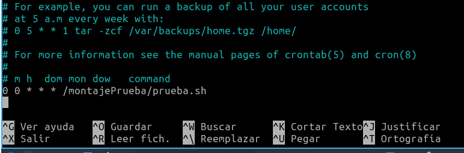

En este proyecto haremos unos ejercicios donde trabajemos algunos comandos de Linux.
Aprender a desenvolvernos en el sistema de archivo de Linux y algunos comandos.
1. Explica el funcionamiento del comando de planificación de tareas “at” y realiza ejemplos prácticos de como utilizarlo comprobando su funcionamiento.
El comando at en sistemas Unix/Linux se utiliza para programar la ejecución de comandos o scripts en un momento específico en el futuro, en lugar de ejecutarlos de inmediato. Aquí está cómo funciona y algunos ejemplos prácticos.2. La empresa PEQUE, S.A. nos indica que quiere ampliar su infraestructura informática con un nuevo departamento dedicado a la administración y al seguimiento de la actividad informática de la empresa. Para ellos ha adquirido 3 equipos nuevos con las siguientes características:



3. FAZER, S.L. empresa de consultoría para la que trabajamos ha analizado las necesidades de este departamento y el hardware de sus ordenadores y ha decidido instalar en cada uno de ellos el sistema operativo Linux Ubuntu 20.04 en el primer disco duro destinando el 85% de espacio de este disco para el sistema operativo y el 15% restante para la partición de intercambio. Una vez instalado el sistema operativo crearemos 1 nuevo usuario llamado “usuario” con perfil de escritorio de tal forma que nuestro sistema operativo tendrá 2 usuarios, el que se crea al instalar llamado el sistema operativo que llamaremos “administrador” y este nuevo usuario (tu nombre+3DNI). Además programaremos una tarea que se ejecutará todos los días del año a las 0:00 y que realizará la copia de seguridad de las carpetas /home/administrador y /home/usuario al segundo disco duro, que lógicamente tendrá que estar montado previamente.




He tenido algunas dificultades a la hora de hacer este ejercicio, debido a que tuve algunos problemas con el disco duro externo y que al principio no me aclaraba con el comando de mount. Al final de la práctica he conseguido hacer las copias de seguridad sin embargo no las he podido enviar al segundo disco duro.
Ha sido una práctica interesante. He aprendido mucho de mis errores y, a pesar del resultado de mi práctica, me ha gustado. Especialmente en como hacer particiones mediante el uso e comando.